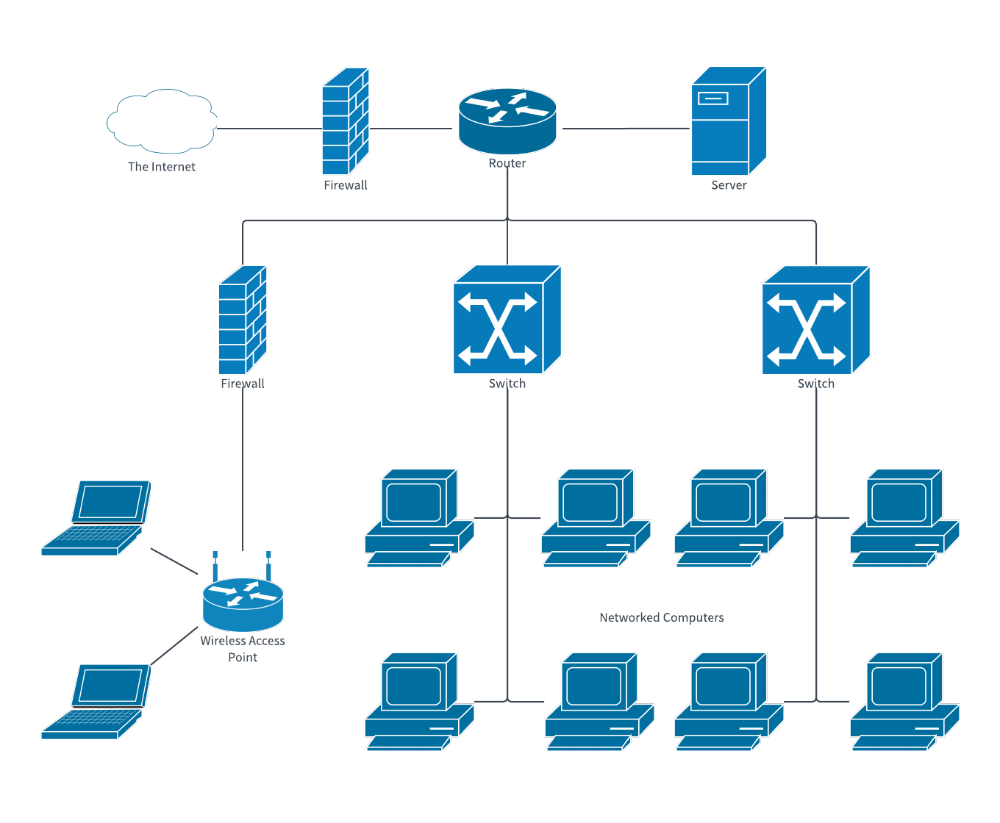

Premièrement, qu'est-ce que l'internet?
Internet: Réseau d'ordinateurs/servers connectés globalement.
Comment sommes-nous arrivé a l'internet d'aujourd'hui?
L'Arpanet: premier réseau "internet", créé en 1969 par le département des défenses.
Utilitée: envoyer des données a travers le continent.
Janvier 1983, l'Arpanet utilise le protocol TCP/IP (Transmission Control Protocol/Internet Protocol). Résultat: accès au pulic, Email, World wide web
Décomissionné en 1990.
~1988: Premiers fournisseurs d'accès internet publics
Résultat: hausse de l'utilisation de l'internet par le public
résultat: début des engins de recherche
Aujourd'hui, internet= outil indespensable, utilisé par plusieurs
| Date | Nombre d'utilisateurs | % de la population mondiale |
| Décembre 1995 | 16 millions | 0.4% |
| Décembre 2005 | 1 Milliards | 15.7% |
| Mars 2011 | 2 milliards | 30.2% |
| Juin 2017 | 3.88 milliards | 51.7% |
| Décembre 2022 | 5,544 milliards | 69% |
Utilisé aujourd'hui: